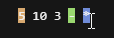
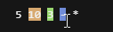
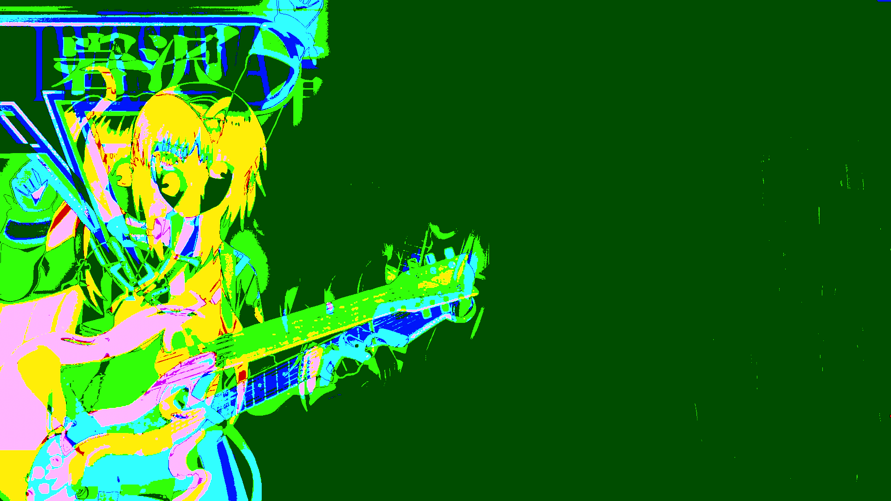

Vapoursynth Expressions
Vapoursynth expressions (expr) are a powerful feature that allows you to perform per-pixel operations using a simple expression syntax. Common use cases for expressions include:
- Arithmetic operations on pixel values (addition, subtraction, multiplication, etc.)
- Combining multiple clips through mathematical operations
- Creating masks based on pixel values or clip differences
- Simple color adjustments and corrections
- Implementing basic pixel-based filters
Expressions are much more powerful than this, and can be used for even more complex operations, such as:
- Complex color space conversions and transformations
- Creating adaptive masks based on multiple conditions
- Noise detection and filtering
- Edge detection and enhancement
- Complex mathematical operations for specialized filters
- Frame property storing and comparison using single pixel clips
There are two different implementations of expressions in Vapoursynth:
- The standard
std.Exprfunction from the core library - The optimized
akarin.Exprfunction from theakarinplugin
Both implementations provide the same core functionality,
but akarin.Expr is an optimized extension
that offers enhanced performance and additional features
through a slightly modified syntax.
This guide will use the akarin.Expr implementation
as it is more powerful
and covers all the use-cases
the standard library does
and more.
Postfix and Infix Notation
Reverse Polish Notation
Postfix notation is also known as Reverse Polish Notation (RPN), and that's what a lot of documentation and encoders use when speaking on the topic.
Basic Syntax
If you've studied any algebra, you've probably seen expressions written in infix notation, where the operator is placed between the operands: $$ x * 1.5 - 10 $$ Infix notation is easy to understand for humans, but it can be more difficult for machines to parse. That's why expressions in Vapoursynth use postfix notation, where the operator is placed after the operands: $$ x\ 1.5\ *\ 10\ - $$ This can be a bit confusing at first, but it's actually quite simple once you get the hang of it.
Stack Evaluation
Postfix notation works by using a stack, a data structure where values are pushed on top and popped off from the top. We can see how this works with a simple example: $$ 5\ 10\ 3\ -\ * $$ The expression is evaluated from left to right:
-
When we see a number, we push it onto the stack:
- Push \(5\): Stack is \([5]\)
- Push \(10\): Stack is \([5, 10]\)
- Push \(3\): Stack is \([5, 10, 3]\)
-
When we see an operator, we pop the required number of values off the stack, apply the operator, and push the result back.
-
See
-:- Pop \(3\), then \(10\) from the stack
- Calculate \(10 - 3\)
- Push \(7\): Stack is \([5, 7]\)
-
See
*:- Pop \(7\), then \(5\) from the stack
- Calculate \(5 * 7\)
- Push \(35\): Stack is \([35]\)
-
The final value on the stack (\(35\)) is our result.
%%{
init: {
'theme': 'base',
'themeVariables': {
'primaryColor': '#b257e6',
'primaryTextColor': '#ffffff',
'primaryBorderColor': '#9333ea',
'lineColor': '#a0aec0',
'secondaryColor': '#2d3748',
'tertiaryColor': '#4a2d5d'
},
'flowchart': {
'curve': 'basis',
'padding': 10,
'rankSpacing': 30,
}
}
}%%
graph TD
classDef default fill:#2d3748,stroke:#4a5568,stroke-width:1px;
classDef operation fill:#b257e6,stroke:#9333ea,color:#ffffff,stroke-width:2px;
classDef stack fill:#4a2d5d,stroke:#b257e6,color:#ffffff,stroke-width:2px;
subgraph "Stack Operations"
A["Initial Stack"]:::operation
B["Push (5)"]:::operation
C["Push (10)"]:::operation
D["Push (3)"]:::operation
E["Subtract (10 - 3)"]:::operation
F["Multiply (5 * 7)"]:::operation
end
subgraph "Expression: 5 10 3 - *"
G["Stack: []"]:::stack
H["Stack: [5]"]:::stack
I["Stack: [5, 10]"]:::stack
J["Stack: [5, 10, 3]"]:::stack
K["Stack: [5, 7]"]:::stack
L["Stack: [35]"]:::stack
end
A --> B
B --> C
C --> D
D --> E
E --> F
G --> H
H --> I
I --> J
J --> K
K --> L
B -.-> H
C -.-> I
D -.-> J
E -.-> K
F -.-> L
Why is postfix notation preferred?
Postfix notation is easier for machines to parse because of how expression trees are evaluated. Expression trees are evaluated bottom-up, where child nodes must be calculated before parent nodes and values flow upward to operators. With infix notation, when reaching an operator, only the left subtree is complete, so the machine must store state and backtrack for the right subtree. However, with postfix notation, all required values are already calculated, allowing immediate evaluation with only a single stack as state.
Reading Postfix Expressions
If you have trouble reading
a postfix expression,
JET has a simple website
where you can enter an expression
and hover over operators
to show which values
on the stack are being operated on.
Using our previous expression:
$$
5\ 10\ 3\ -\ *
$$
Hovering over the *
and - operators
shows affected values:


Plugin Syntax
To use expressions in a script,
you can use the akarin.Expr plugin.
The std.Expr function
can also be used,
but it has fewer features.
Clips
The plugins accept a list of VideoNodes,
and will apply the expression to each pixel
of the first given clip.
Note that the plugins
always return a single VideoNode
that is the result of applying the expression
to the first input clip,
regardless of how many input clips are provided.
In standard Vapoursynth expressions,
each VideoNode
is represented by a single character.
This starts from \(x\) and goes through the alphabet up to \(u\).
%%{
init: {
'theme': 'base',
'themeVariables': {
'primaryColor': '#b257e6',
'primaryTextColor': '#ffffff',
'primaryBorderColor': '#9333ea',
'lineColor': '#a0aec0',
'secondaryColor': '#2d3748',
'tertiaryColor': '#4a2d5d'
},
'flowchart': {
'curve': 'basis',
'padding': 8,
'nodeSpacing': 4,
'rankSpacing': 20
}
}
}%%
graph TD
classDef node fill:#b257e6,stroke:#9333ea,color:#ffffff,stroke-width:1px;
classDef char fill:#4a2d5d,stroke:#b257e6,color:#ffffff,stroke-width:1px;
classDef skip fill:none,stroke:none;
N1["N1"]:::node
N2["N2"]:::node
N3["N3"]:::node
N4["N4"]:::node
N5["N5"]:::node
N6["N6"]:::node
skip1["⟶"]:::skip
N24["N24"]:::node
N25["N25"]:::node
N26["N26"]:::node
C1["x"]:::char
C2["y"]:::char
C3["z"]:::char
C4["a"]:::char
C5["b"]:::char
C6["c"]:::char
C24["w"]:::char
C25["v"]:::char
C26["u"]:::char
N1 --> C1
N2 --> C2
N3 --> C3
N4 --> C4
N5 --> C5
N6 --> C6
N24 --> C24
N25 --> C25
N26 --> C26
akarin.Expr extends the standard Vapoursynth expression syntax
by adding an additional operator
that makes these values more human-readable,
while also allowing you to pass
a theoretically arbitrary number
of clips.
This operator is srcN,
where N is the index value.
%%{
init: {
'theme': 'base',
'themeVariables': {
'primaryColor': '#b257e6',
'primaryTextColor': '#ffffff',
'primaryBorderColor': '#9333ea',
'lineColor': '#a0aec0',
'secondaryColor': '#2d3748',
'tertiaryColor': '#4a2d5d'
},
'flowchart': {
'curve': 'basis',
'padding': 8,
'nodeSpacing': 4,
'rankSpacing': 20
}
}
}%%
graph TD
classDef node fill:#b257e6,stroke:#9333ea,color:#ffffff,stroke-width:1px;
classDef char fill:#4a2d5d,stroke:#b257e6,color:#ffffff,stroke-width:1px;
classDef skip fill:none,stroke:none;
N1["N1"]:::node
N2["N2"]:::node
N3["N3"]:::node
N4["N4"]:::node
N5["N5"]:::node
skip1["⟶"]:::skip
N253["N253"]:::node
N254["N254"]:::node
N255["N255"]:::node
C1["src0"]:::char
C2["src1"]:::char
C3["src2"]:::char
C4["src3"]:::char
C5["src4"]:::char
C253["src252"]:::char
C254["src253"]:::char
C255["src254"]:::char
N1 --> C1
N2 --> C2
N3 --> C3
N4 --> C4
N5 --> C5
N253 --> C253
N254 --> C254
N255 --> C255
Expressions
Expressions are the core of these plugins. It makes use of operators to manipulate pixel values. Below is a list of operators, small descriptions on what they do, which plugins support which, and how many values they take from the stack.
Operator table
| Operator | Description | std.Expr |
akarin.Expr |
Values |
|---|---|---|---|---|
+ |
Addition | ✅ | ✅ | 2 |
- |
Subtraction | ✅ | ✅ | 2 |
* |
Multiplication | ✅ | ✅ | 2 |
/ |
Division | ✅ | ✅ | 2 |
% |
Modulo | ❌ | ✅ | 2 |
< |
Less than | ✅ | ✅ | 2 |
> |
Greater than | ✅ | ✅ | 2 |
= |
Equal to | ✅ | ✅ | 2 |
>= |
Greater than or equal | ✅ | ✅ | 2 |
<= |
Less than or equal | ✅ | ✅ | 2 |
and |
Logical AND | ✅ | ✅ | 2 |
or |
Logical OR | ✅ | ✅ | 2 |
xor |
Logical XOR | ✅ | ✅ | 2 |
not |
Logical NOT | ✅ | ✅ | 1 |
exp |
Exponential | ✅ | ✅ | 1 |
log |
Natural logarithm | ✅ | ✅ | 1 |
sqrt |
Square root | ✅ | ✅ | 1 |
pow |
Power | ✅ | ✅ | 2 |
abs |
Absolute value | ✅ | ✅ | 1 |
sin |
Sine | ✅ | ✅ | 1 |
cos |
Cosine | ✅ | ✅ | 1 |
min |
Minimum | ✅ | ✅ | 2 |
max |
Maximum | ✅ | ✅ | 2 |
floor |
Round down | ❌ | ✅ | 1 |
ceil |
Round up | ❌ | ✅ | 1 |
round |
Round to nearest | ❌ | ✅ | 1 |
trunc |
Truncate decimal | ❌ | ✅ | 1 |
clamp/clip |
Clamp values to custom range (i.e. limited range) | ❌ | ✅ | 3 |
? |
Ternary operator | ✅ | ✅ | 3 |
dup |
Duplicate top stack value | ✅ | ✅ | 1 |
swap |
Swap top two stack values | ✅ | ✅ | 2 |
x[r,r] |
Static relative pixel access | ❌ | ✅ | 0 |
x[] |
Dynamic absolute pixel access | ❌ | ✅ | 2 |
srcN |
Access Nth input clip (N≥0) | ❌ | ✅ | 0 |
N |
Current frame number | ❌ | ✅ | 0 |
X |
Current column position | ❌ | ✅ | 0 |
Y |
Current row position | ❌ | ✅ | 0 |
width |
Frame width | ❌ | ✅ | 0 |
height |
Frame height | ❌ | ✅ | 0 |
var! |
Store to variable | ❌ | ✅ | 1 |
var@ |
Read from variable | ❌ | ✅ | 0 |
dropN |
Drop N items from stack | ❌ | ✅ | N |
sortN |
Sort top N items on stack | ❌ | ✅ | N |
0x123 |
Hexadecimal constants | ❌ | ✅ | 0 |
023 |
Octal constants | ❌ | ✅ | 0 |
Both expression plugins accept either a single string or a list of strings as the expression argument. When passing a list, the number of expressions can match the number of planes in the first clip. For example, a YUV clip would accept up to 3 expressions: one for the Y plane, one for the U plane, and one for the V plane.
If fewer expressions are provided than planes, the last expression in the list will be used for any remaining planes. When passing just a single expression string, that expression will be applied to all planes.
This will apply the expression x 1 +
to every plane of the first input clip.
This is equivalent to the following:
If we want to only apply an expression to a single plane, we can pass empty strings. For example, if we only want to apply an expression to the U plane, we can pass the following:
When passing values in an expression, you should be aware of the input and output formats. While integer formats automatically clamp values to their valid ranges, floating point formats do not. This means that for float clips, you must manually clamp values to avoid invalid results.
| Bit-Depth | Format | Limited Range (Luma / Chroma) | Full Range (Luma / Chroma) |
|---|---|---|---|
| 32-bit | float | [0.0, 1.0] / [-0.5, 0.5] | [0.0, 1.0] / [-0.5, 0.5] |
For float clips, there are two ways to clamp values in an expression:
- Using
minandmaxoperators - Using the
clamp(orclip) operator (akarin.Expronly)
In akarin.Expr,
the following are equivalent:
'x 0.0 max 1.0 min''x 0.0 1.0 clamp'
If necessary, you can also define custom clamp ranges for each plane.
['x 0.0 max 1.0 min', 'x -0.5 max 0.5 min']['x 0.0 1.0 clamp', 'x -0.5 0.5 clamp']
Similarly, you must be aware of the formats of the input clips when writing expressions. If there's an unaccounted format mismatch, the expression may produce garbage data.
Simple Expressions
This section is incomplete!
This section is a stub. You can help us by expanding it.
How can I help?
- Add more examples
- Add more explanations
- Write about other simple uses of expressions
There are a couple of simple expressions that are commonly used.
Making diffs
Expressions can be used
to make a diff between clips,
just like the std.MakeDiff/MergeDiff functions.
Making a simple diff
This will check if a pixel in src1
is the same as the pixel in src2.
If it is,
the clip's value will be set to 255,
otherwise 0,
and it will apply this
to all planes.


The current expression catches a lot of noise (due to dithering applied during filtering and encoding). If we want to add a threshold, we can make the following changes:
- First, we define a threshold value (
thr) that determines how much difference we allow between pixels - Instead of checking for exact equality between pixels, we:
- Subtract one pixel value from the other (
x y -) - Take the absolute value of that difference (
abs) to handle both positive and negative differences
- Subtract one pixel value from the other (
- We compare the absolute difference against our threshold (
<= thr)- If the difference is less than or equal to the threshold, the pixels are considered "similar enough"
- If it's greater than the threshold, the pixels are considered different
Thresholded difference

Complex Expressions
This section is incomplete!
This section is a stub. You can help us by expanding it.
How can I help?
- Add more examples
- Add more explanations
- Write about other complex uses of expressions
Expressions give you a lot of power and freedom to manipulate pixels however you want.
Range Compression and Decompression
Expressions can be used
to handle range compression issues
in video clips,
serving as an alternative
to functions like std.Levels.
Range compression occurs
when a clip's pixel values
are incorrectly scaled
between limited range
and full range.
For example,
when a limited range clip
is incorrectly interpreted
as full range,
its values get compressed
into a smaller range,
resulting in loss of contrast.
While std.Levels
is commonly used
to fix this,
we can achieve the same results
using expressions.
Alternative methods
The arguably better way
to fix range compression
is to use the std.Levels function.
However,
this section illustrates
that expressions can be used
to replace other functions
and achieve similar results.
In cases where you may need
to use an expression
and need to fix range compression
at the same time,
akarin.Expr may be more useful.
Ultimately,
it's up to you
to determine
when you should use
which method,
including when to combine them
or perform operations separately.
Fixing range compression

The inverse of this can be done
by swapping the peak and lowest values,
as well as swapping full and limited in the formula.